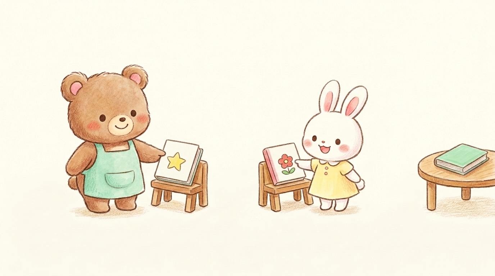

Japanese demonstratives follow a beautifully unified 4-way pattern: こ (near me), そ (near you), あ (far from both), and ど (question). Today in Lesson 2, we master the "things" columns!
イラストで理解！クマの田中さんと白ウサギの鈴木さんで見る「これ・それ・あれ」の距離感
Tanaka-san (Bear / Speaker) and Suzuki-san (Rabbit / Listener) show you how distance decides which word to use:

📗 これこ (Near Me)
話し手（クマの田中さん）の近く
手元や自分の目の前にある物を指すとき。
例：これは本です。
📘 それそ (Near You)
聞き手（ウサギの鈴木さん）の近く
話し相手の手元や相手の前にある物を指すとき。
例：それは本です。
📙 あれあ (Far from Both)
二人から離れた場所（遠く）
話し手からも聞き手からも離れた遠くの物を指すとき。
例：あれは本です。
早見マスター表こそあど全体体系表（Ko-So-A-Do Matrix Table）
All Japanese demonstratives organized by distance and function: